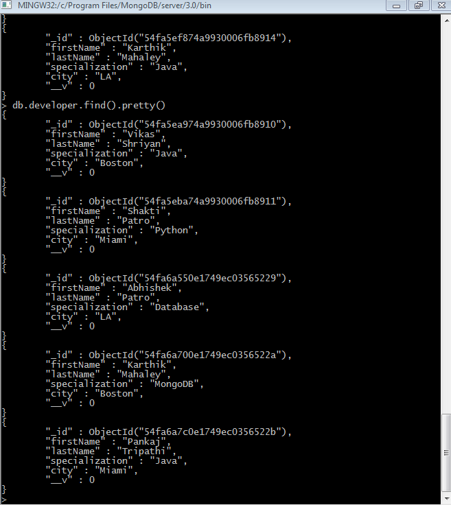

MongoDB-Introduction
MongoDB-Insert
Click here to go the server.
.PNG)
Here is the data present in the db which is present locally under developer Collection
About the Experiment
MongoDB is a cross-platform document-oriented database. Classified as a NoSQL database, MongoDB eschews the traditional table-based relational database structure in favor of JSON-like documents with dynamic schemas (MongoDB calls the format BSON), making the integration of data in certain types of applications easier and faster.
Mongoose provides a straight-forward, schema-based solution to modeling your application data and includes built-in type casting, validation, query building, business logic hooks and more, out of the box.
Mongoose is an elegant way of mongoDB object modelling for nodeJS.
You can download MongoDB from here.
You can download Mongoose from here.
In this experiment, I've started with the basic Insert operation using MongoDB and Mongoose.
The output of this will be in JSON format, not parsed and in a HTML page.
Here I insert different developer JSON objects and query using it the get function from the URL.
Code Snippet
Mongoose is the framework needed to connect to the MongoDB for which I use require('mongoose') which will import the required library using Mongoose framework.
I then connnec to my local collection 'cs5610' using connect.
Express is the framework used here which is declared as required, require('express') will import the required library to run the application using Express framework.
I then declare a Developer schema which would contain all the declarations in a schema.
I use the model constructor to compile the schema definition. I then create three different instances of the Developer and
save it or insert into the db.
I then retrieve the data in JSON format using get method. The data can be retrieved using /api/Developer in the URL.
Javascript Code
var mongoose = require('mongoose');
mongoose.connect('mongodb://localhost/cs5610');
var express = require('express');
var app = express();
var DeveloperSchema = new mongoose.Schema({
firstName: String,
lastName: String,
specialization: String,
city: String,
}, { collection: "developer" });
var DeveloperModel = mongoose.model("Developer1", DeveloperSchema);
var developer1 = new Developer({ first: "Vikas", last: "Shriyan", Specialization: "Java", City: "Boston" });
var developer2 = new Developer({ first: "Shakti", last: "Patro", Specialization: "Python", City: "Miami" });
var developer3 = new Developer({ first: "Abhishek", last: "Patro", Specialization: "Database", City: "Boston" });
developer1.save();// To save it locally on the db
developer2.save();
developer3.save();
app.get('/developer', function (req, res) {
DeveloperModel.find(function (err, data) {
res.json(data);
});
});
app.listen(3000);
View Source
References
Youtube VideoBootstrap CSS code